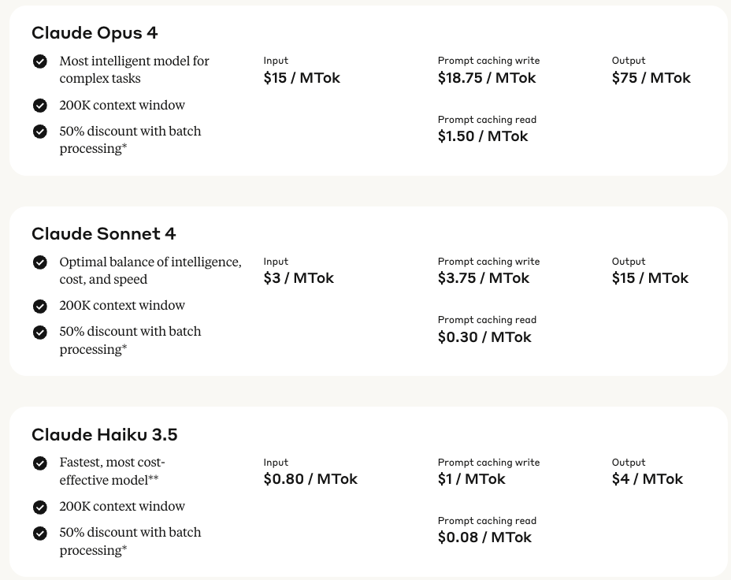

“What’s the capital of the moon?”
"There isn't one."
“Are you sure?”
"Yes, I am sure."
curl https://api.openai.com/v1/chat/completions \
-H "Content-Type: application/json" \
-H "Authorization: Bearer $OPENAI_API_KEY" \
-d '{
"model": "gpt-4.1",
"messages": [
{"role": "system", "content": "You are a terse assistant."},
{"role": "user", "content": "What is the capital of the moon?"}
]
}'Abridged response:
curl https://api.openai.com/v1/chat/completions \
-H "Content-Type: application/json" \
-H "Authorization: Bearer $OPENAI_API_KEY" \
-d '{
"model": "gpt-4.1",
"messages": [
{"role": "system", "content": "You are a terse assistant."},
{"role": "user", "content": "What is the capital of the moon?"},
{"role": "assistant", "content": "The moon does not have a capital. It is not inhabited or governed."},
{"role": "user", "content": "Are you sure?"}
]
}'Abridged Response:
Fundamental units of information for LLMs
Words, parts of words, or individual characters
Important for:
Try it yourself:
Common words represented with a single number:
Other words may require multiple numbers
https://www.anthropic.com/pricing -> API tab

Claude Sonnet 4
For Claude Sonnet:
200k tokens seems like a lot of context…
… but the entire chat is passed along each chat iteration
{"role": "system", "content": "You are a terse assistant."},
{"role": "user", "content": "What is the capital of the moon?"},
{"role": "assistant", "content": "The moon does not have a capital. It is not inhabited or governed."},
{"role": "user", "content": "Are you sure?"},
{"role": "assistant", "content": "Yes, I am sure. The moon has no capital or formal governance."}posit::conf(2025) Slides: https://github.com/posit-conf-2025/shiny-py